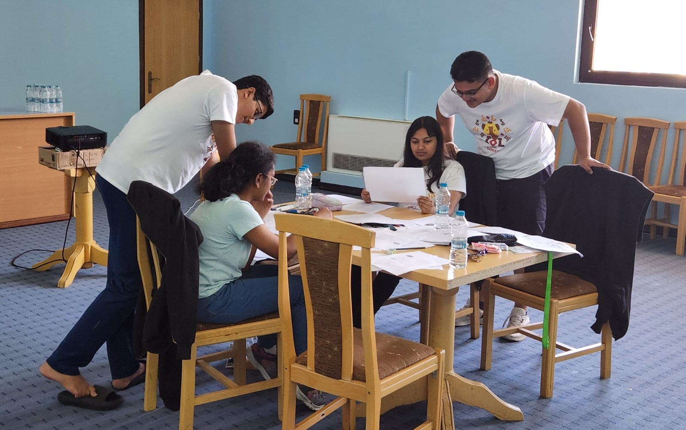

Panini Linguistics Olympiad

The Panini Linguistics Olympiad is the Indian national program for selection and training of the candidates who represent India at the International Linguistics Olympiad (IOL).The program is coordinated by Microsoft Research Labs India, International Institute of Information Technology Hyderabad, JNU Delhi and the University of Mumbai & is actively supported by regional coordinators across the country including Chennai Mathematical Institute, IIT Guwahati, SNLTR Kolkata, and IIT Patna.
Round 1 is a national level test which typically comprises of about 5-6 problems to be solved in 4 hrs.
These problems are all self-contained, i.e. unlike other competitions, all the data you need to crack the whole thing, is in the problem itself, thus, you are expected to sharpen logic and develop your own techniques to solve problems from languages all over the world and uncover new features, that you might not have thought of before! (In those 4 hrs itself).
Thus, it also touches on the aspect of making you aware of what linguistics as a field is and how interesting it can get. It gets one thinking on how to scientifically approach something like a language, which they have been in contact with, ‘forever’. After PLO, they are enabled to look for patterns around them in languages and how they function.
Don’t fret on preparation. If you still want to, feel free to explore the collection of past PLO problems (under the Resources tab) 😉. They are arranged by their levels of difficulty, so you can start with the light green problems and when you feel confident enough, move on to the darker shades.
Round 1 is typically a 7 to 10 day camp, for the top 25-30 seniors and 5-10 juniors selected in that year. It was hosted by Microsoft Research Lab, Bangalore till 2015, after which International Institute of Information Technology, Hyderabad took over.
At this camp, some of the top linguists and computational linguists work on introducing linguistics, in its full glory, covering areas like phonology, semantics, historical linguistics, computational linguistics etc. while also training the students for the Olympiad, where you can solve some cool olmypiad problems based on what you learn in the lectures.
In between this week of fun, contestants compete in a mid test and an end test which determine wether they are selected to participate in the IOL.